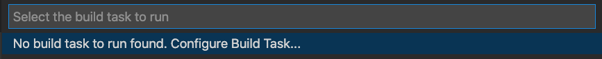
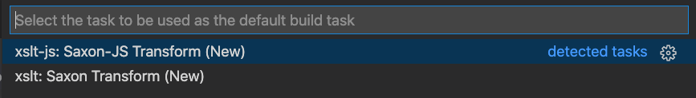
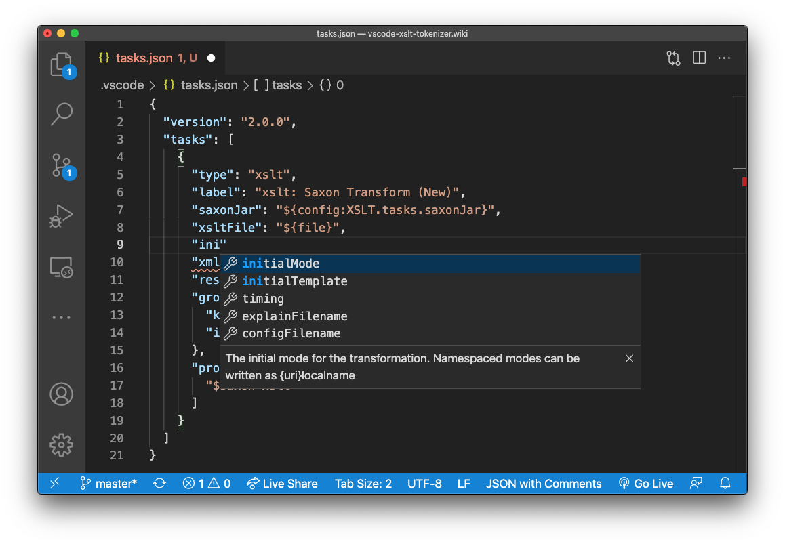
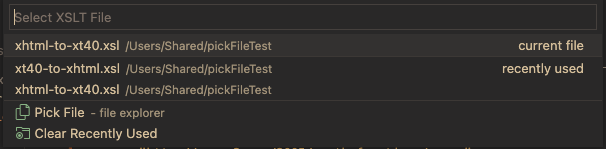

Running XSLT
Visual Studio Code's Tasks include custom task types for configuring and running Saxon (Java) or Saxon-JS (JavaScript) XSLT transforms. The Saxon XSLT processor is called via its command-line interface from the Integrated Terminal in Visual Studio code. Task configurations effectively control command-line arguments for the XSLT Processor. An attempt is made to parse any error messages returned from Saxon, so that the position of any Saxon-reported errors in the XSLT can be highlighted.
XSLT transforms are run using custom xslt or xslt-js
Visual Studio Code Tasks
for Saxon (requires Java and
Saxon installation)
or Saxon-JS (requires NodeJS installation) respectively.
Saxon (Java) setup
Ensure that you have a workspace folder open in Visual Studio Code (use File > open... from the menu). The configuration will be saved in a
tasks.jsonfile in this workspace folder.-
If Java is not already installed, Java 1.8 or later can be downloaded and installed from here
-
If Saxon is not already installed, Saxon-HE can be downloaded and installed from here
-
Saxon (Java) tasks need the path to the installed Saxon jar file to be included in a property in your Visual Studio Code settings. Invoke
Preferences: Open User Settingsfrom the Command Palette (⇧⌘P) and typexsltto show a short-list of settings:
-
Enter the Jar file path in the Tasks: Saxon Jar property (see above)
Saxon-JS setup
Ensure that you have a workspace folder open in Visual Studio Code (use File > open... from the menu). The configuration will be saved in a
tasks.jsonfile in this workspace folder.-
If NodeJS is not already installed, it can be downloaded and installed from here
-
Initialize NPM in the current folder and then install the Saxon-JS package (xslt3) by running the following commands in the Visual Studio Code terminal (⌘J):
npm init -y npm install --save-dev xslt3
To configure the initial task:
Invoke
Tasks: Run Build Taskfrom the Command Palette (⇧⌘B):Press Enter to Configure Build Task:
Select from the list (shown above) the task type you require (you may see more task types in the list), for either Saxon or Saxon-JS.
-
The
tasks.jsonfile will then be opened with a template task added for the task type specified. The task shown above is for the Saxon task. Edit this task to fit your XSLT transform requirement. It's a good idea to change thelabelproperty (the value shown in the tasks list) to describe your XSLT transform. Auto-completion with hints is available as you type. The actual file type is 'JSON with Comments' so you can add comments and leave trailing commas etc. -
You can create any number of tasks for different XSLT transform scenarios. Note that the
group.isDefaultproperty controls that task that is automatically launched when you next invokeRun Build Taskfrom the Command Palette or when using ⇧⌘B. -
Save any changes to the tasks.jsonfile ⌘S -
Run the newly configured XSLT transform by invoking
Run Build Taskfrom the Command Palette or when using ⇧⌘B.
Variable References in Tasks
Visual Studio Code supports variable substitutions for Task configuration files.
Variable substitution uses the ${variableName} syntax. Commands that
return a string can be invoked via variable substitution, the boiler plate XSLT Task uses ${command:xslt-xpath.pickXsltFile}' and ${command:xslt-xpath.pickResultFile}'
variable references.
User-input for file-selection within a Task
A set of 'Pick File' commands suitable for XSLT tasks is available to allow user-selected file paths to be used within an XSLT task. An example is shown below:

Each command prompts the user to select a file. This is from: the current file, a 'recent files' list for that commmand (optionally from a specified 'previous stage' command), or from a 'Open File' or 'Save File' VS Code dialog as appropriate. The available commands are listed below:
| Command | Description |
|---|---|
| xslt-xpath.pickFile | General file selection with arguments to provide custom behaviour. This must be invoked with arguments that are supplied in the 'inputs' property of the tasks.json file. Invoked by ${input:<input-id>} |
| xslt-xpath.pickXsltFile | Returns a user-selected XSLT file |
| xslt-xpath.pickXmlSourceFile | Returns a user-selected XML Source file |
| xslt-xpath.pickStage2XmlSourceFile | Returns a user-selected Stage2 XML source file |
| xslt-xpath.pickResultFile | Returns a user-selected result file |
| xslt-xpath.pickStage2ResultFile | Returns a user-selected result file for Stage2 |
A full list of variable references is given in Visual Studio Code's Variables Reference
The 'pickFile' command
The general purpose command 'xslt-xpath.pickFile' is the base commands for specific 'pick file' commands like 'pickXsltFile'. After a task is invoked, the user is prompted to select a file for opening or saving. A Pick List is shown with options to select files in up to 5 ways:
- the current file (if it's extension is compatible with the extensions list)
- from recently used (current stage) files - from list for the current label e.g. 'Select XSLT File'
- from recently used (previous stage result) files - shows result files from a previous task
- from the
<?xml-stylesheet href="...?>href in the current file - from an 'Open File' or 'Save File' dialog
The 'recently used' file data is maintained per workspace and is restored when VS Code is closed and reopened. A 'clear recently used' option is also listed when there are files already in the list.
The 'pickList' command must be invoked as an 'input' property of a task as it requires an 'options' argument. A sample 'inputs' property
can be added to the 'tasks.json' file with the XSLT: add Inputs to Task file command.
Command Options for 'pickFile'
The 'pickFile' commands 'options' object have the following properties:
- label - the prompt message for the user, also the identifier for the 'recently' used list
- extensions? - an array of filter file-extensions (when set, a '*' option can also be selected from the dialog)
- isResult? - causes the 'Save File' dialog to be shown when set true
- prevStageLabel? - shows the recently used files for the specified label
- previousStageGroup? - the group-name for the 'previous stage' files - default: 'recent filesfrom previous stage'
- xmlStylesheetPI? - set 'true' for pick-list to include a
<?xml-stylesheet?>href from current editor
"inputs": [
/*
1. the specialist 'pickFile' command equivalents for the inputs defined here are:
"xsltFile": "${command:xslt-xpath.pickXsltFile}", // can select from current file - if xslt - or recently used xslt files
"xmlSource": "${command:xslt-xpath.pickXmlSourceFile}", // can select from current file or recently used stage1 source files
"xmlSource": "${command:xslt-xpath.pickStage2XmlSourceFile}", // can select from recently used stage2 source files or stage1 result files
"resultPath": "${command:xslt-xpath.pickResultFile}", // can save to recently used stage1 result files
"resultPath": "${command:xslt-xpath.pickStage2ResultFile}", // can save to recently used stage2 result files
2. these inputs invoke the 'pickFile' command with args for custom behaviour:
*/
{
/* --- Usage: ---
"xmlSource": "${input:xmlFile}",
*/
"id": "xmlFile",
"type": "command",
"command": "xslt-xpath.pickFile",
"args": {"label": "Select XML File", "extensions": ["xml", "xhtml", "svg"] }
},
{
/* --- Usage: ---
"xmlSource": "${input:xmlFile2}",
*/
"id": "xmlFile2",
"type": "command",
"command": "xslt-xpath.pickFile",
"args": {"label": "Select Stage1 XML File", "extensions": ["xml", "xhtml", "svg"], "prevStageLabel": "Select Result File", "prevStageGroup": "recent files from previous stage" }
},
{
/* --- Usage: ---
"xsltFile": "${input:xsltFile}",
*/
"id": "xsltFile",
"type": "command",
"command": "xslt-xpath.pickFile",
"args": {"label": "Select XSLT Stylesheet", "extensions": ["xsl", "xslt"], "xmlStylesheetPI": true }
},
{
/* --- Usage: ---
"resultPath": "${input:resultFile}",
*/
"id": "resultFile",
"type": "command",
"command": "xslt-xpath.pickFile",
"args": {"label": "Select Result File", "isResult": true }
}
]
Configuring more tasks
To create more tasks, just invoke Tasks: Run Build Task from the Command Palette
and choose the task type you need. Provided you've changed the label property from the template
task for that type, a new task will created from the template task.
Visual Studio Tasks are very flexible. You can combine XSLT tasks with other task types, for example, to run a shell command.
The dependsOn task property is used to chain tasks together. The Compound Tasks
section of the Visual Studio Code Tasks documentation
covers this concept in more detail.
The Visual Studio Code terminal
When you start a Task, it is run in a Task tab in Visual Studio Code's Integrated Terminal,
the Pane hosting the Terminal view is toggle with ⌘J.
The tab label reflects the Task configuration label property.
When a Saxon XSLT task is run, xsl:message output and any Saxon errors will be shown in the terminal window.